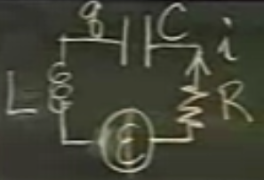

Ders 12
Bu derste homojen olmayan (inhomogeneous) denklemlere ciddi bir giriş yapacağız.
$$ y" + p(x)y' + q(x)y = f(x) $$
Şimdiye kadar eşitliğin sağ tarafı sıfır olmuştu, artık orada bir fonksiyon var. Not: Çoğu uygulamada $x$ yerine $t$ sembolü vardır, zaman (time) için.
$f(x)$ için pek çok isim kullanılır. Giriş sinyali (input signal), sürücü terimi (driving term), güç terimi (forcing term), vs. Bunlardan hangisinin kullanıldığı hangi derste olduğunuza göre değişebilir, farklı mühendislik, bilim dalları farklı terimleri kullanabilirler, ama tüm bu terimler aynı şeyi kastediyorlar.
Çözüm $y(x)$ ise cevap (response) olarak nitelenir, çıktı (output) kelimesi de kullanılır.
Şimdiye kadar homojen koşulu incelememizin sebebi üstteki ODE'nin homojen denklemin çözümü bilinmeden çözülemeyeceği.. Yani $y" + p(x)y' + q(x)y = 0$ denklemi çözüm için önemli. Sıfıra eşit olan denkleme de farklı isimler veriliyor: Alakalı homojen ODE, indirgenmiş (reduced) denklem gibi.
Yani homojen denklemin çözümü $y = c_1y_1 + c_2y_2$ homojen olmayan denklem için gerekli, o sebeple ayrı bir şekilde bir sembolü de var. Bazen $y_c$, bazen $y_h$. Hiç alt sembol (subscript) koymayanlar da var, bunlar işi oldukça karıştırıyorlar tabii. $y_c$'ye verilen isim nedir? Bir ismi yok, çoğu kitap ona "alakalı homojen denklemin çözümü" gibi uzun bir etiket veriyor. Bu dersin kitabı ona "tamamlayıcı çözüm (complimentary solution)" ismi vermiş.
Klasik Örnekler
Ornek 1
$$ mx" + bx' + kx = f(t) $$
Bu daha önceden hatırlayacağımız yay / kütle / engelleyici sistemi. Fakat bu sistemde daha önce sağ taraf sıfırdı. Şimdi sıfır yerine olan $f(t)$ fiziksel sistemde neyi temsil ediyor?
Resmi hatırlayalım

Ortada duran kütle ileri geri gidebiliyordu, eğer denklemde $f(t)$ varsa, biri o kütle üzerinde ek olarak direk bir güç uygulamış olur, mesela kütlenin bir metal olduğunu farzedelim, ve uzaktan birinin bir mıknatıs tutarak yay, engelleyici "haricinde" değişik bir yönden de bir güç uyguladığını hayal edelim.
$f(t)=0$ olduğu zaman (yani denklemde olmadığı zaman), sistem pasiftir. Dışarıdan hiçbir güç uygulanmamaktadır. Başlangıç şartları olarak bazı şeyler yapabiliriz tabii, mesela kütleyi bir tarafa doğru çekip, bırakmak gibi. Ama ondan sonra sistemde herşey kendiliğinden olacak, sistem salınıma girecek, ya da girmeyecek, vs. Eğer $f(t)$ varsa, bu sisteme güç uygulanmış sistem (forced system) denmesi bu yüzden.
Örnek 2
Diferansiyel bir modeli mükemmel bir şekilde takip eden bir diğer sistem, basit bir elekrik devresidir.

$L$ bobinin yarattığı oluşturucu (inductance) terimidir. Bu devreyi temsil etmek için iki diferansiyel denklem kullanılır, ama bu denklemlerden biri ötekinden türetilebilir, ikisi de Kirchoff'un voltaj kanununa bağlıdır. Bu kanun der ki "devrenin tüm noktalarında alınan voltaj farklılıkları / düşüklüklüklerini toplarsak, sonuç sıfır olmalıdır".
$q$ kapasitans üzerindeki akım (charge), $i$ devredeki akımdır.
Denklem şöyle
$$ Li' + Ri + \frac{q}{C} = \varepsilon(t) $$
Sağdaki $\varepsilon$ belki bir pil, bir jeneratör üzerinden devreye eklenen enerji. Bu enerji sinüssel bir dalga şeklinde olabilir, ki o zaman alternatif akımdan (AC/DC) bahsediyor olurduk, ya da sabit olabilir, o zaman düz akımdan (DC) bahsediyor olurduk.
Formül hala nihai formunda değil, oraya gelmek için bir şey daha bilmemiz gerekiyor, $q' = i$, yani akımın kapasitörü terk ediş hızı devrenin akıma eşittir, akım bu yüzden hareket eder. Tabii aslında hareket eden bir şey yok, her elektron yanındakini ittirir, ama aslında yerlerini terk etmezler, her neyse [hoca ben de bu işi tam anlamıyorum diyor], bu noktada iki şey yapabiliriz. Ya tüm denklemi entegre ederiz ve her şeyi $q$ bazında temsil ederiz, ya da denklemin türevini alırız ve her şeyi $i$ bazında temsil ederiz. Bir türev yöntemini takip edeceğiz:
$$ Li" + Ri' + \frac{i}{C} = \varepsilon(t)'$$
Eğer sağ tarafta düz akım olsaydı türev sonrası $\varepsilon(t)'$ sıfır olacaktı. Böylece elimize homojen bir denklem geçmiş olurdu.
Eğer düz akım bile koymamış olsaydık, yani devreye dışarıdan ek yapmasaydık, belki başlangıç şartı olarak kapasitör içinde bir doluluk olabilirdi, ve bu akım yavaşça devre üzerinden, az sönümlü durumda mesela ileri geriye bir salınımla akacak ve bitecekti. Ama genellikle uygulamalarda olan dışarıdan enerji verilmesi ve akımın ittirilmesi / sürülmesi / idare edilmesi, ve buna göre akımın ne olacağının hesaplanması.
Elimizdeki iki problemler işte bunlar. Ya pasif devre, ya da dışarıdan verilen enerji.
Şimdi homojen bir denklemi çözmek için gereken kilit teoremi görelim.
Teori
$$ Ly = f(x) $$
Üstteki bir ODE ve $L$ bir lineer operatör. O zaman çözüm şu formdadır:
$$ y_p + y_c $$
yani
$$ y = y_p + c_1y_1 + c_2y_2 $$
$y_p$ özel (particular) çözüm. Bu kelime bu dersin en kötü seçilmiş / kafa karıştırıcı kelimelerinden biri. Özel çözüm derken sanki özgün (unique) çağrışımı yapılıyor ama aslında kastedilen herhangi bir çözüm.
Teoriye dönelim, eğer $L$'in lineer operatör oluşunu kullanırsak teorinin ispatı çok kolay. İki ifadeyi ispatlamamız gerekiyor.
1) Tüm $y = y_p + c_1y_1 + c_2y_2$ ifadeleri çözümdür. Bu ifadeyi nasıl ispatlarız? Ana denkleme koyarak.
$$ L(y_p + c_1y_1 + c_2y_2) $$
Üstteki lineer operatör olduğuna göre
$$ = L(y_p) + L(c_1y_1 + c_2y_2) $$
Biliyoruz ki
$$ = \underbrace{L(y_p)}_{f(x)} + \underbrace{L(c_1y_1 + c_2y_2)}_{0} $$
$$ =f(x) $$
Demek ki tüm $y_p + c_1y_1 + c_2y_2$'ler bir çözümdür.
Bu hikayenin bir yarısı tabii. Hikayenin ikinci yarısı bu çözümlerin "yegane" çözümler olduğunu göstermek. Şimdi ortaya $u(x)$ diye bir ufaklık çıkartacağız, bu arkadaş çözüm olduğunu zannedecek. Ve bizde ispatta göstermeliyiz ki bu kendini farklı zanneden $u(x)$ bile $y_p + c_1y_1 + c_2y_2$ ifadesinden başka bir şey olamaz.
Bunu nasıl yapacağız? Çok kolay. Eğer bir çözüm ise
$$ L(u) = f(x) $$
olmalıdır. Peki şu bizim "özel çözümü" kullanalım, $L(y_p)$ nedir? Aynısı
$$ L(y_p) = f(x) $$
Son iki denklemi birbirinden çıkartırsak
$$ L(u) - L(y_p) = 0 $$
$$ L(u - y_p) = 0$$
O zaman üstteki son ifade homojen denklemin bir çözümüdür. O zaman şu doğru olmalı
$$ u-y_p = \tilde{c_1}y_1 + \tilde{c_2}y_2 $$
Diğer yandan önceden bildiğimiz gibi
$$ y = y_p + c_1y_1 + c_2y_2 $$
$$ y - y_p = c_1y_1 + c_2y_2 $$
Ya da
$$ u = y_p + \tilde{c_1}y_1 + \tilde{c_2}y_2 $$
$$ y = y_p + c_1y_1 + c_2y_2 $$
Son iki ifade birbirinin aynısı, o zaman $u$ farklı bir çözüm olamaz.
Eğer katsayılar sabit ise, işin yarısını halletmişiz demek ki. Tamamlayıcı denklemi biliyorsak, ki onu nasıl bulacağımızı biliyoruz artık, üstel, kompleks üstel, $\sin, \cos$ fonksiyonlar kullanarak, vs. Geriye ne kalıyor? Sadece özel bir çözüm bulmak kalıyor. Yani hangisi olursa olsun, eşitliğin sağ tarafına uyan "bir" çözüm bulduğumuz anda, işimiz bitiyor.
İş bitiyor dedik ama, önümüzdeki iki haftayı bu özel çözümü bulmakla geçireceğiz. Fourier Serilerini kullanan bir genel metot göreceğiz, çünkü bu serileri işlemek için iyi bir bahane bu, fakat şunu da eklememiz lazım. Birkaç standart fonksiyon için operatörler kullanaran genel bir yöntem var, tüm diğer "standart olmayan" durumlar için seriler kullanılıyor, ya da yaklaşıksallama (approximation) kullanılıyor. Eğer bunları hiçbiri işlemezse, en kötü durumda bilgisayara hesaplattırırız, ve sayısal cevabı özel çözüm olarak kullanırız.
Şimdi bu yaptıklarımızı 1. seviye denklemlerle irtibatlandırmak istiyorum. Ders 8'den hatırlayalım:
$$ y' + ky = q(t) $$
Çözüm için entegre edici faktörü bulmuştuk, çarpmıştık, vs. Çözüm şöyleydi
$$ y = e^{-kt} \int q(t)e^{kt} \mathrm{d} t + ce^{-kt} $$
Üstteki formül 2. seviye denklemi çözmek için gösterdiğimiz paradigmaya nasıl bağlantılı? Üstteki denklemde artının sağındaki terim tamamlayıcı denklemin çözümü gibi durmuyor mu?
$$ y = e^{-kt} \int q(t)e^{kt} \mathrm{d} t + \underbrace{ce^{-kt}}_{y_c} $$
Bu mantıklı çünkü $ce^{-kt}$ alttaki homojen denklemin çözümü değil mi?
$$ y' + ky = 0$$
Bunu hemen ilk bakışta görüyoruz (dersin bu seviyesinde artık bunu anında söyleyebilmemiz lazım).
O zaman üstteki çözümde $y_c$'den geri kalanlar da özel çözüm olurlar,
$$ y = \underbrace{e^{-kt} \int q(t)e^{kt} \mathrm{d} t}_{y_p} + \underbrace{ce^{-kt}}_{y_c} $$
İtiraz edenler olabilir, ama bu $y_p$ içinde tanımsız bir entegral var, ayrıca hiç sabit yok, vs. Eğer entegralin tanımsızlığı bizi rahatsız ediyorsa, onu tanımlı hale getirmenin numarasını görmüştük, alt sınır için bir sıfır koyarız, üste $t$ koyarız, vs. Sabit konusuna gelince, entegre edince ortaya bir sabit çıkmayacak mı?
Devam edelim. Üstteki çözüm hakkında bir yorum daha yapmıştık, hatırlarsak, $k>0$ ve $k<0$ şartları öyle farklı iki sonuca yol açıyor, öyle farklı fiziksel anlamlara sebep oluyor ki, aslında üstteki aynı forma bağlı olmalarına rağmen, bu şartların tamamen farklı denklemler olarak görülmeleri gerektiğinden bahsetmiştik.
$k>0$, üstteki çözümü $y_c$'nin geçici (transient) $y_p$'nin sabit konuma (steady-state) dönüştüğü bir durum ortaya çıkıyordu. Bu durumda başlangıç şartlarının tanımladığı $c$'nin ne olduğu önemli olmuyordu, çünkü $c$'yi içeren kısım ne olursa olsun sıfıra gidiyordu.
$k<0$ olunca işler değişiyor tabii, o zaman üst paragraftaki analiz ise yaramıyor.
Şimdi yapmak istediğim üstteki anlatımın 2. ve daha üst seviye denklemlerdeki karşılığını bulmak. 2. seviyeyi anlamak yeterli aslında, onu anlarsak, daha üst seviye denklemlerde yapılacaklar tıpatıp aynı. 2. derece denklemi yazalım:
$$ y" + Ay' + By = f(t) $$
Sormak istediğim soru şu. Hangi şartlarda 1. derece durumunda gördüğüm türden bir sabit konum kısmı, geçici kısım ayrımını 2. derece denklem için de yapabilirim?
Çözüm neye benziyor?
$$ y = y_p + c_1y_1 + c_2y_2 $$
Bu denklemde başlangıç şartları $c_1y_1 + c_2y_2 $ bölümünde olduğuna göre, "hangi şartlarda olursa olsun" diyeceğimiz kısım ve $t \to \infty$ sırasında yokolup gidip gitmeyeceğini anlamaya çalışacağımız kısım o'dur.
Şimdi yokolma mantığının mekaniğine gelelim. 1. derece durumda o mekaniği görmek kolaydı, çünkü $e^{-kt}$ ibaresinde $k$'nin etkisinin hemen görebiliyorduk. 2. derece durumunda bu biraz daha zor, ama çözümü elde edince ne kadar güzel bir sonuç olduğunu göreceğiz.
Yani soru $t \to \infty$ iken ne zaman $c_1y_1 + c_2y_2 \to 0$? Çünkü eğer bu olursa o zaman ODE'ye stabil denebilir. O cevabı bulursak o zaman
$$ y = y_p + \underbrace{c_1y_1 + c_2y_2}_{geçici} $$
olacak ve (önümüzdeki iki hafta içinde bulmak için ter dökeceğimiz) çözüm $y_p$ aradığımız stabil çözüm olacak.
ODE'lerin stabil çözümünü bilmek çok önemli, çünkü o zaman ODE hakkında kabaca bir fikir sahibi olabiliyorsunuz, uzun vadede nasıl davranacağını anlıyorsunuz.
Bu analizi kalem kalem, her şart için irdeleyerek (case by case basis) inceleyelim.
\begin{array}{l|l|l} \hline Karakteristik denklemin kökleri & Çözümler & Stabilite şartı \\ \hline $r_1 \ne r_2$ & $c_1e^{r_1t} + c_2e^{r_2t}$ & $r_1 < 0$ ve $r_2 < 0$ \\ \hline $r_1 = r_2$ & $(c_1 + c_2t)e^{r_1t}$ & $r_1 < 0$ \\ \hline $r = a \pm bi$ & $e^{at}(c_1\cos(bt) + c_2\sin(bt))$ & $a < 0$ \\ \hline \end{array}
Yani tablonun sağındaki şartlar bir ODE için geçerliyse, o ODE stabil demektir. Terminolojide bunu söylemenin kısa yolu "eğer tüm karakteristik köklerin reel bölümü negatif ise" sözüdür.
Yukarı